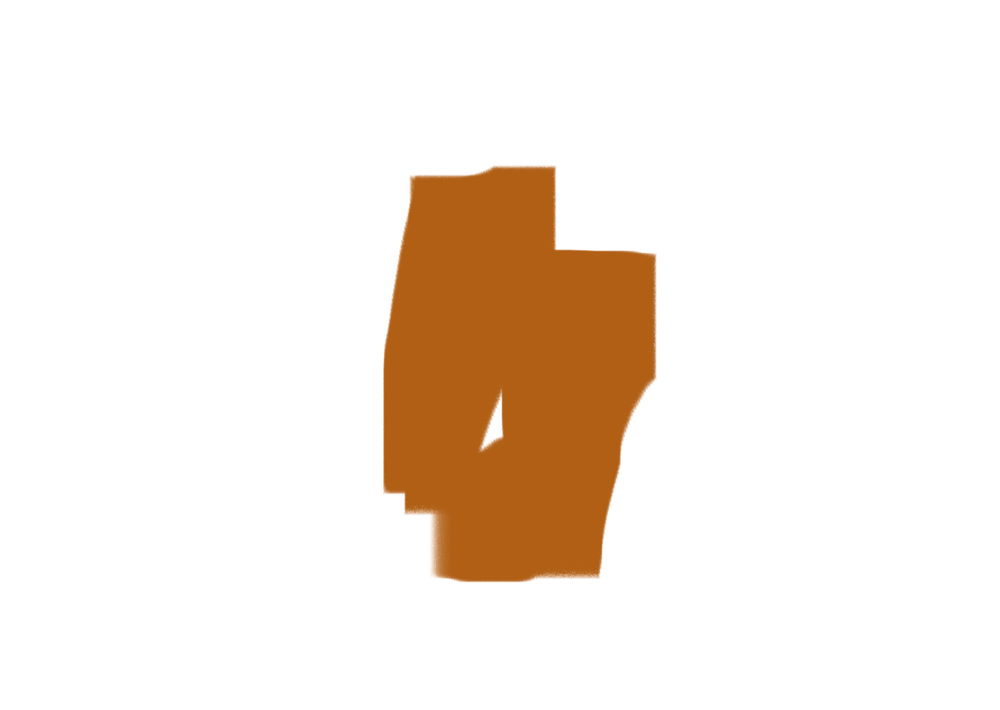
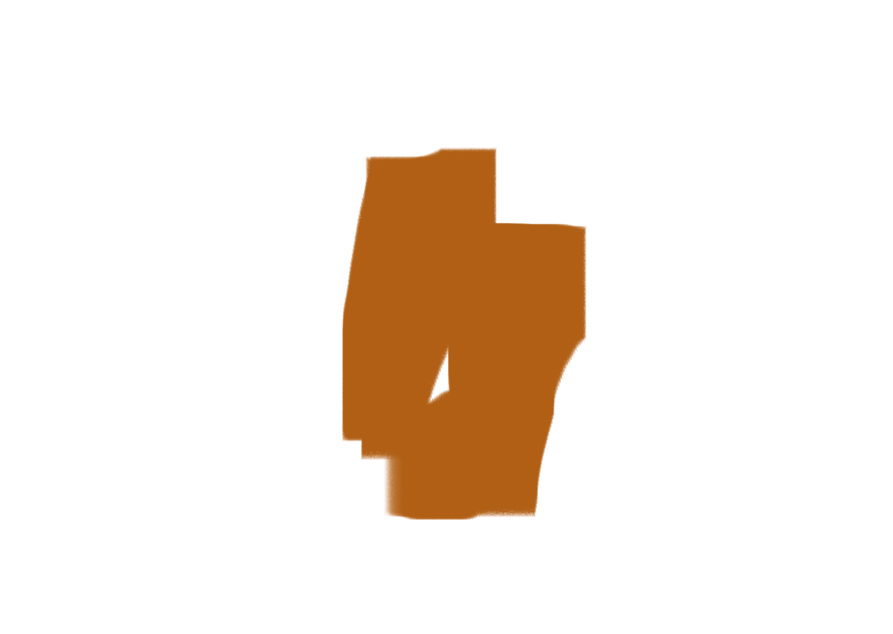

My Portfolio
About Page
Personal Portfolio Page
Profesional Portfolio Page
Chat Page
If you want to contact me my details are on this page, aswell as information on my work history, education, and a general over view of me. If you have any questions do ask.
This is where you will find information on my personal activaties and intrests. I enjoy music, technology, helping others, playing videogames, and baking. If you want to know more about who I am day to day cheak out this page.
My professional portfolio includes both a computing section and a art section. I am most confident when i can combine these two aspects of myself and thats why it is what I succseed at do professionally
The chat page will allow you to talk with others. You can talk about my portfolio or the weather if it pleases you.